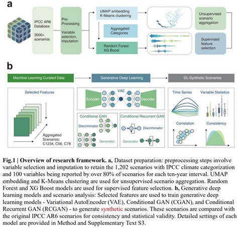

Climate change mitigation scenarios, essential for future planning, are traditionally created through computationally intensive Integrated Assessment Models. A new study by Peking University and KAIST demonstrates that deep learning can generate synthetic scenarios with reasonable likeness to conventional models, offering a faster and scalable alternative.

As the urgency for effective climate change mitigation strategies intensifies, innovative methods to generate future scenarios are needed. A new study published in Nature Climate Change presents a deep learning framework developed by Peking University and KAIST, which produces synthetic climate mitigation scenarios aligned with the IPCC AR6 scenario database, offering a complementary approach to traditional Integrated Assessment Models (IAMs).
The study analyzes 1,202 IAM-based scenarios to identify key drivers across sectors, focusing on energy and emissions patterns. Using machine learning techniques, the researchers selected critical features and trained three deep learning models — a Variational AutoEncoder (VAE), Conditional GAN (Generative Adversarial Network), and Recurrent Conditional GAN — to generate 30,000 synthetic scenarios. The VAE achieved the highest label transferring accuracy of 0.98, effectively replicating key variable distributions and inter-variable correlations. Importantly, internal validation checks confirmed that the synthetic scenarios maintain physical consistency in power-sector dynamics, demonstrating the feasibility of using deep learning to support large-scale, low-cost mitigation scenario generation.
“Integrated assessment models have long been used to simulate global low-emission futures,” said Prof. Haewon McJeon of the KAIST Graduate School of Green Growth and Sustainability. “However, these models have been hindered by long simulation times and high computational demands. In this paper, we present a proof-of-concept methodology that uses deep learning to rapidly generate thousands of scenarios, helping the development of optimal decarbonization pathways around the world.”
This research highlights the promising role of deep learning in climate change mitigation planning. By providing scalable and efficient tools for scenario generation, deep learning frameworks can enhance the flexibility, diversity, and inclusivity of future climate policy assessments.
Paper Link: https://doi.org/10.1038/s41558-025-02352-8
딥러닝을 활용한 글로벌 감축 시나리오 핵심 변수 생성 연구
기후변화 감축 시나리오는 탄소중립과 지속가능한 미래 계획에 필수적인 수단이지만, 복잡한 통합평가모형(IAM)을 통해서만 수립과 평가가 가능했다. 북경대학교와 KAIST 공동 연구진은 Nature Climate Change에 발표한 이번 연구에서 딥러닝을 활용하여 기존 IAM 시나리오와 유사한 정확도로 수만 개의 시나리오를 신속하게 생성하는 방법을 제시했다.
연구진은 IPCC AR6 시나리오 데이터베이스에서 1,202개의 시나리오를 분석해 주요 에너지 및 온실가스 변수들을 식별하고, 이를 바탕으로 Variational AutoEncoder(VAE), Conditional GAN(Generative Adversarial Network), Recurrent Conditional GAN 세 가지 딥러닝 모델을 학습시켜 30,000개의 합성 시나리오를 생성했다. 특히 VAE 모델은 0.98의 높은 정확도로 원본 데이터 특성과 상관관계를 재현했으며, 발전 부문 세부 변수에서도 물리적 일관성을 확보했다.
전해원 KAIST 녹색성장지속가능대학원 교수는 “딥러닝은 신속하고 신뢰성 있는 기후 감축 시나리오를 생성할 수 있는 가능성을 보여준다”며, “이는 정책 다변화와 신속한 대응이 필요한 현재의 기후 위기 대응에 새로운 해법을 제시할 수 있다”고 밝혔다.
또한, “기존 통합평가모형은 긴 계산 시간과 높은 계산 부담이라는 한계가 있었지만, 이번 연구에서는 딥러닝을 통해 수천 개의 시나리오를 빠르게 생성하여 전 세계 최적 탈탄소 경로 개발을 지원할 수 있는 방법론을 제시했다”고 강조했다.
이번 연구는 딥러닝이 기후변화 연구, 특히 인간-지구 시스템 간 복잡한 상호작용을 모사하는 데 있어 새로운 가능성을 열어주었으며, 향후 다양한 사회경제 경로와 지역별 특성을 반영한 시나리오 확장에도 기여할 수 있을 것으로 기대된다.